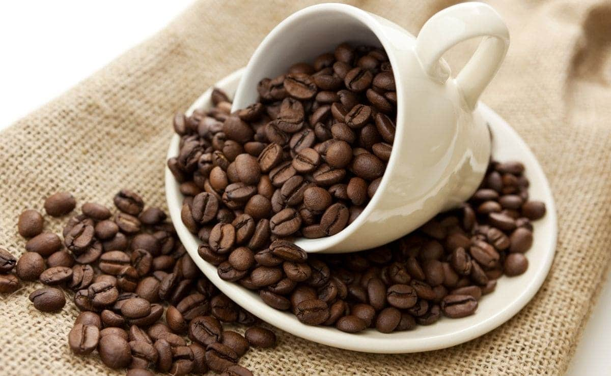
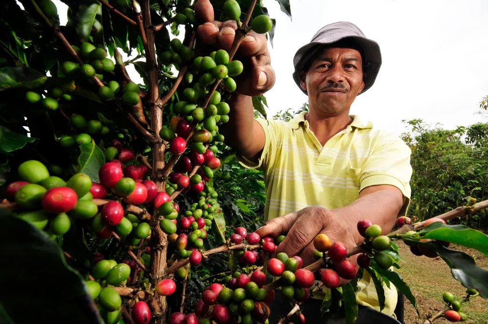
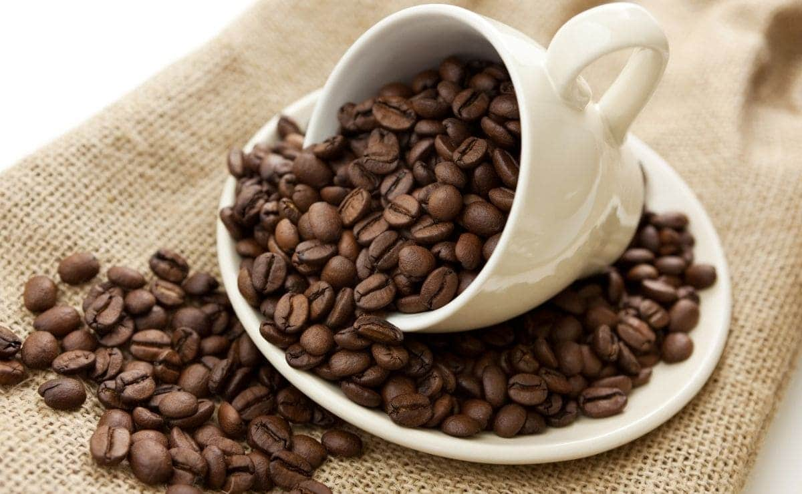
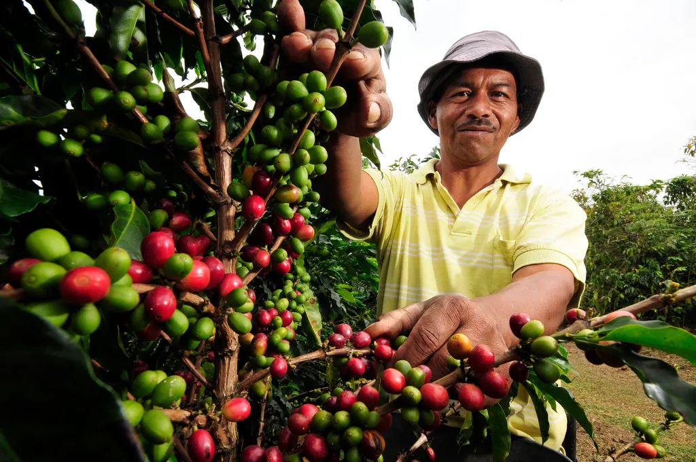
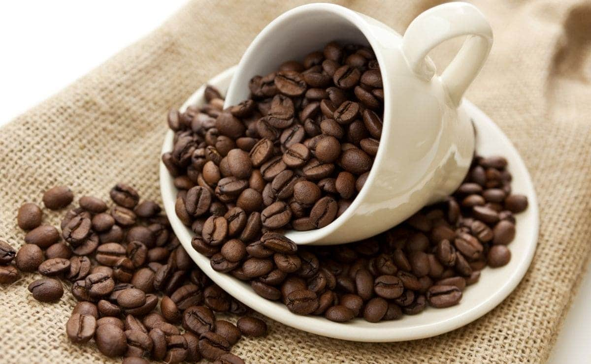
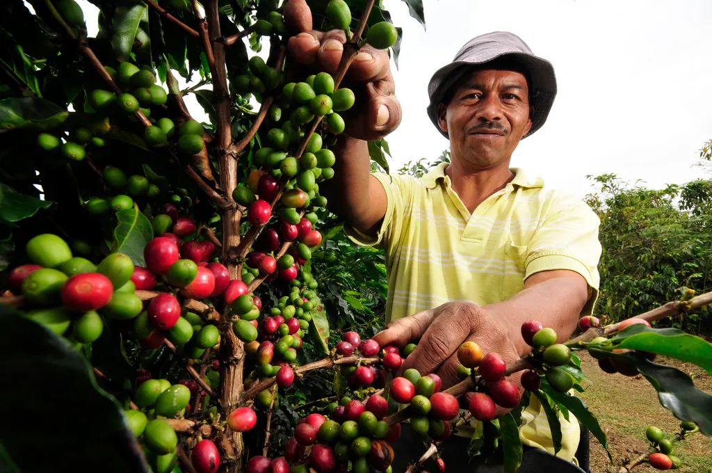

Galería del Café
 



Tradición, aroma y sabor cultivados con amor en nuestras montañas.
Explorar CaféEcoAroma Nariño representa la esencia del café cultivado en las montañas del sur de Colombia. Nacemos del trabajo comprometido de familias caficultoras que han heredado la tradición de cultivar y tostar café con respeto por la tierra, el agua y las comunidades rurales.
Colombia es reconocida como el tercer mayor productor de café del mundo y uno de los principales exportadores hacia Estados Unidos. En los últimos años, el café colombiano ha alcanzado cifras históricas de exportación, superando los 13 millones de sacos anuales, destacándose por su calidad, sostenibilidad y certificaciones de comercio justo.
EcoAroma Nariño se une a esta tradición nacional, promoviendo la innovación y la sostenibilidad en el proceso productivo. Nuestra visión es contribuir al posicionamiento de Colombia como un referente mundial en café especial, llevando el sabor del campo colombiano a nuevos mercados y generaciones.



Tueste medio con notas a chocolate y caramelo.
$25.000 COP

Granos seleccionados de altura, aroma intenso y sabor balanceado.
$28.000 COP

Perfecto para preparar en casa, sabor suave y cuerpo completo.
$22.000 COP

Cultivado de forma sostenible en las montañas de Nariño.
$30.000 COP